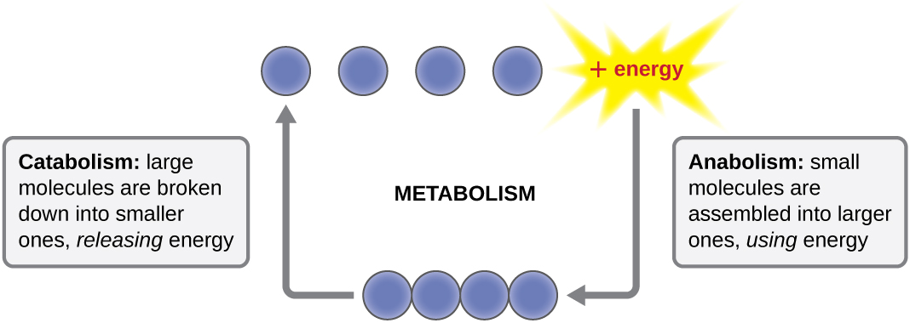
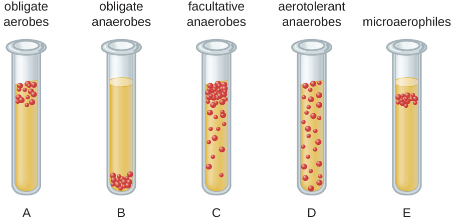
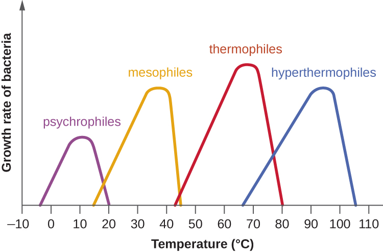
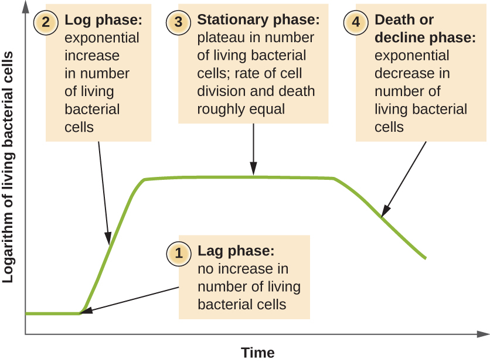
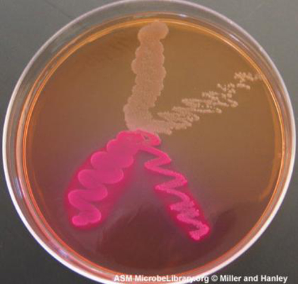

Microbial Growth & Metabolism
A single bacterium you cannot see can become a billion in a day — if it is fed, warmed, and left alone. Everything a microbe does to your patient, from spoiling a wound to filling a blood culture bottle, depends on whether its surroundings let it grow. This chapter is about those surroundings: what microbes eat, whether they can tolerate oxygen, the temperature and acidity they demand, the predictable arc a population follows from a few cells to a teeming mass, and how we coax them onto a plate in the lab to name them. Learn what makes microbes grow and you already understand why we refrigerate specimens, why we draw cultures before the first antibiotic dose, and why some infections hide where oxygen cannot reach.
By the end of this chapter you can
- Identify the carbon and energy sources microbes use and place a microbe in a nutritional category.
- List the nutrients microbes require and explain what makes an organism fastidious.
- Classify microbes by their oxygen requirement — obligate aerobe, obligate anaerobe, facultative anaerobe, microaerophile, aerotolerant anaerobe.
- Explain why oxygen is toxic to some microbes and the role of catalase and superoxide dismutase.
- Describe how temperature, pH, and osmotic pressure shape microbial growth, and where human pathogens fall on each scale.
- Diagram the four phases of the bacterial growth curve and define generation time.
- Explain why actively dividing cells matter for antimicrobial therapy and specimen timing.
- Distinguish the major types of culture media and describe how a pure culture is obtained from an isolated colony.
Section 1What microbes need

The raw materials of a cell
To grow, a microbe must build more of itself, and to build it needs raw materials. The bulk of any cell is made from just a handful of elements — carbon, hydrogen, oxygen, nitrogen, phosphorus, and sulfur — the so-called macronutrients, needed in large amounts to make proteins, nucleic acids, membranes, and sugars. Alongside these, cells need small amounts of micronutrients (trace elements) such as iron, zinc, and copper, which slot into enzymes as helpers. Some microbes can synthesize every complex molecule they need from these simple ingredients; others cannot, and must be handed finished vitamins or amino acids — these ready-made extras are called growth factors.
An organism that cannot make one or more of its own growth factors, and therefore has demanding, picky nutritional needs, is described as fastidious. This is not a trivia point — it is the reason some pathogens need special enriched plates to grow at all, and the reason a lab that uses the wrong medium reports "no growth" on a patient who is, in fact, infected.
Where the carbon comes from
Because carbon forms the backbone of every biological molecule, one of the first questions we ask about any microbe is where it gets its carbon. There are only two answers. An autotroph ("self-feeder") builds its own organic molecules from inorganic carbon dioxide (CO₂) — think of the environmental bacteria that, like plants, fix carbon from the air. A heterotroph ("other-feeder") cannot do this; it must take in carbon that some other organism already assembled, feeding on organic compounds such as sugars, proteins, and fats. Every microbe that infects humans is a heterotroph — it lives off of you, your tissues, or the nutrients on a hospital surface.
Where the energy comes from
The second question is where the energy comes from. A phototroph captures energy from light; a chemotroph extracts energy from chemical bonds by breaking down compounds. Combine the carbon source with the energy source and you get a microbe's nutritional type. The category that matters most to nursing is the last row of the table: the chemoheterotroph, which gets both its carbon and its energy from organic compounds. Bacteria, fungi, protozoa, and helminths that cause human disease are all chemoheterotrophs — and so are you.
| Nutritional type | Carbon source | Energy source | Who |
|---|---|---|---|
| Photoautotroph | CO₂ | Light | Cyanobacteria, algae, plants |
| Photoheterotroph | Organic compounds | Light | Some purple & green bacteria |
| Chemoautotroph | CO₂ | Inorganic chemicals | Certain soil & deep-sea bacteria |
| Chemoheterotroph | Organic compounds | Organic compounds | All human pathogens, fungi, animals |
- Microbes need macronutrients (C, H, O, N, P, S), micronutrients (trace metals), and sometimes ready-made growth factors.
- Carbon source splits microbes into autotrophs (from CO₂) and heterotrophs (from organic compounds).
- Energy source splits them into phototrophs (light) and chemotrophs (chemicals).
- All human pathogens are chemoheterotrophs; a fastidious organism needs enriched media to grow.
Section 2Oxygen requirements

Oxygen: fuel for some, poison for others
We tend to think of oxygen as universally life-giving, but for microbes it is a double-edged sword. Using oxygen to burn fuel yields far more energy than any other option, which is why organisms that can use it grow fast. But oxygen chemistry also produces reactive oxygen species — superoxide, hydrogen peroxide (H₂O₂), and others — that shred proteins, membranes, and DNA. To live with oxygen safely, a microbe must carry detoxifying enzymes: superoxide dismutase (SOD), which neutralizes superoxide, and catalase, which splits hydrogen peroxide into water and O₂. Microbes that lack these enzymes are killed by the very air we breathe.
The five oxygen classes
Microbes sort into five groups by their relationship with oxygen, and the classic way to see it is a thioglycolate tube: a broth that is oxygen-rich at the top and oxygen-free at the bottom, so each organism grows only in the band where it can survive. An obligate aerobe must have oxygen and grows only at the top. An obligate anaerobe is poisoned by oxygen and grows only at the bottom. A facultative anaerobe prefers oxygen but can switch to fermentation without it, so it grows throughout, thickest at the top. A microaerophile needs oxygen but only a little, growing in a thin band just below the surface. An aerotolerant anaerobe ignores oxygen entirely — it never uses it but is not harmed by it — and grows evenly through the tube.
| Class | Uses O₂? | Harmed by O₂? | Clinical example |
|---|---|---|---|
| Obligate aerobe | Yes — required | No | Pseudomonas aeruginosa, M. tuberculosis |
| Obligate anaerobe | No | Yes — killed | Clostridioides difficile, Bacteroides |
| Facultative anaerobe | Yes if present; ferments if not | No | E. coli, Staphylococcus, Klebsiella |
| Microaerophile | Yes — low levels only | Yes at normal levels | Helicobacter pylori, Campylobacter |
| Aerotolerant anaerobe | No | No (tolerates it) | Streptococcus, Cutibacterium, some lactobacilli |
A related group worth knowing is the capnophiles, which grow best in an atmosphere with elevated carbon dioxide — organisms like Neisseria and Haemophilus that the lab incubates in a CO₂-enriched jar.
- Oxygen yields the most energy but generates toxic reactive oxygen species; survival requires catalase and superoxide dismutase.
- Obligate aerobes require O₂; obligate anaerobes are killed by it; facultative anaerobes do fine either way.
- Microaerophiles need low O₂; aerotolerant anaerobes never use it but tolerate it.
- Anaerobic infections live in low-oxygen tissue and demand special specimen handling.
Section 3Temperature, pH & conditions

Temperature: everyone has a sweet spot
Every microbe has three cardinal temperatures — a minimum below which it stops growing, an optimum where it grows fastest, and a maximum above which its proteins cook and it dies. Microbes are grouped by where that optimum falls. Psychrophiles love the cold and grow best in near-freezing conditions; mesophiles prefer moderate temperatures around body heat; thermophiles thrive in hot springs and compost; and hyperthermophiles flourish in near-boiling water. The single most clinically important fact here is that human pathogens are mesophiles, with an optimum right around 37°C — body temperature — which is exactly why the human body is such a hospitable home for them and why lab incubators are set to 35–37°C.
| Group | Optimum range | Where you find them |
|---|---|---|
| Psychrophile | ~0–15°C | Arctic waters, deep ocean |
| Psychrotroph | ~4–25°C | Refrigerated food — Listeria, spoilage bacteria |
| Mesophile | ~20–40°C | Human body — nearly all pathogens |
| Thermophile | ~50–60°C | Hot springs, compost heaps |
| Hyperthermophile | ~80°C and above | Volcanic vents, geysers |
pH: living in acid, base, or neutral
Microbes also have a preferred acidity. Most human pathogens are neutrophiles, growing best near neutral pH (about 6.5–7.5), which matches the pH of blood and most tissues. Acidophiles prefer acidic conditions — the lactobacilli that keep the vagina at a protective low pH, or the food-preserving bacteria of yogurt and sauerkraut. Alkaliphiles favor basic environments. The stomach, at a pH near 2, is a chemical barrier that kills most swallowed microbes — which makes Helicobacter pylori, which neutralizes the acid around itself to colonize the stomach lining, all the more remarkable.
Water, salt, and the rest
Microbes need liquid water, and anything that ties up water slows them down. High concentrations of salt or sugar pull water out of a cell by osmosis, which is exactly how salting meat and sugaring jam preserve food — the environment becomes too dry for microbes to grow. A few organisms defy this: halophiles actually require high salt, and osmotolerant organisms simply put up with it. This is why Staphylococcus aureus, which tolerates salt well, can grow on skin and in salty foods that stop other bacteria — a trait the lab exploits with high-salt selective media.
- Every microbe has cardinal temperatures; human pathogens are mesophiles optimized near 37°C.
- Most pathogens are neutrophiles; stomach acid is a defense that H. pylori uniquely defeats.
- Salt and sugar preserve food by pulling water out of microbes via osmosis.
- Listeria grows in the refrigerator, so chilling is not the same as sterilizing.
Section 4The bacterial growth curve

Doubling: how bacteria multiply
Most bacteria reproduce by binary fission: one cell copies its DNA, grows, and splits into two identical daughters. The time it takes one cell to become two is the generation time (or doubling time), and it can be startlingly short — Escherichia coli can double every 20 minutes under ideal conditions. Because each generation doubles the population (1, 2, 4, 8, 16 …), growth is exponential: a single cell dividing every 20 minutes becomes over a million in about seven hours. This is why a contaminated IV fluid or a mishandled specimen can go from harmless to dangerous overnight, and why some organisms cause illness so quickly.
The four phases
Put a few bacteria into fresh broth and the whole population moves through four predictable phases. In the lag phase, the cells are not yet dividing — they are gearing up, making enzymes and building blocks, adjusting to their new home. In the log (or exponential) phase, they divide at their maximum rate and the numbers explode; this is the phase of healthiest, most active cells. Eventually nutrients run low and wastes build up, and the population enters the stationary phase, where new cells are produced about as fast as old ones die and the total holds steady. Finally, in the death (decline) phase, conditions turn hostile and cells die faster than they can be replaced.
| Phase | What's happening | Why it matters clinically |
|---|---|---|
| Lag | Cells adapt; little or no division | Explains a delay before symptoms or before a culture turns positive |
| Log (exponential) | Rapid doubling; most active cells | Antibiotics work best here — they target growing cells |
| Stationary | Growth = death; nutrients depleted | Slow-growing cells tolerate drugs better; toxins/spores may form |
| Death (decline) | Cells die faster than they divide | Population collapses as the environment fails |
Why the log phase is a nursing concern
The phase a population is in changes how it responds to treatment. Many antibiotics — the cell-wall drugs especially — can only kill bacteria that are actively building and dividing, so they are most effective against log-phase cells and much weaker against the slow, dormant cells of the stationary phase. That is one reason deep, walled-off, or biofilm infections are so stubborn: the cells inside are barely dividing. It is also why maintaining steady drug levels and completing the full course matters — you want the drug present whenever the surviving cells resume dividing.
- Bacteria multiply by binary fission; generation time is how long one cell takes to become two.
- Doubling makes growth exponential — a few cells become millions in hours.
- The four phases are lag, log (exponential), stationary, and death.
- Antibiotics work best on log-phase (actively dividing) cells — and cultures should be drawn before antibiotics.
Section 5Culturing microbes

Media: the food we grow microbes on
To study or identify a microbe, we usually have to grow it in the lab on a culture medium — a nutrient broth or a firm gel. Solid media are set with agar, a jelly extracted from seaweed that microbes cannot digest and that stays firm at body temperature. Media come in different types for different jobs. A general-purpose (all-purpose) medium supports a broad range of organisms. An enriched medium adds extra nutrients — blood, serum — to grow fastidious pathogens. A selective medium contains ingredients that suppress unwanted organisms so only the target grows. A differential medium contains something — a dye, a sugar — that makes different organisms look different, so you can tell them apart at a glance. Many real plates, like MacConkey agar, are both selective and differential at once.
| Media type | What it does | Example |
|---|---|---|
| General-purpose | Grows a wide variety of microbes | Nutrient / tryptic soy agar |
| Enriched | Extra nutrients for fastidious organisms | Blood agar, chocolate agar |
| Selective | Inhibits some microbes so the target grows | MacConkey (Gram-negatives), MSA (staph) |
| Differential | Makes organisms look visibly different | Blood agar (hemolysis), MacConkey (lactose) |
| Transport | Keeps a specimen viable on the way to the lab | Anaerobic & swab transport systems |
Colonies and the pure culture
When a single bacterial cell is placed on solid agar and left to grow, it divides again and again in place until millions of its descendants pile up into a visible mound called a colony. Because every cell in that colony came from one original cell, a colony is essentially a clone — a pure culture of one organism, uncontaminated by others. Getting there is the whole point of the streak-plate technique: an inoculating loop drags the sample across the plate in a diminishing pattern so that, by the final streaks, individual cells are separated far enough apart to each grow into their own isolated colony. Pick one well-separated colony, and you have your pure culture to identify and test.
Counting what grew
Colonies are also how we count microbes. Because we assume each colony arose from one original cell (or one clump), lab counts are reported as colony-forming units (CFU) rather than exact cell numbers. This is more than bookkeeping: a urine culture growing a high CFU count of a single organism points to a true urinary tract infection, while a low count or a mix of many organisms often signals contamination from collection. Reading a culture report — the organism, the CFU count, and the sensitivities — is a daily bedside skill.
- Agar solidifies media; media may be general-purpose, enriched, selective, differential, or transport.
- Selective media suppress unwanted microbes; differential media make organisms look different.
- A colony is the visible clone of one original cell; an isolated colony gives a pure culture.
- Counts are reported as colony-forming units (CFU), and good specimen collection is essential to a meaningful result.
The chapter in one breath
- Microbes need carbon, an energy source, and nutrients; all human pathogens are chemoheterotrophs, and fastidious ones need enriched media.
- Oxygen is fuel for some and poison for others: obligate aerobes, obligate anaerobes, facultative anaerobes, microaerophiles, and aerotolerant anaerobes, with survival hinging on catalase and SOD.
- Anaerobic infections hide in low-oxygen tissue and need special specimen handling.
- Human pathogens are mesophiles (optimum ~37°C) and mostly neutrophiles; salt and sugar preserve food by osmosis, and Listeria still grows in the fridge.
- Bacteria double by binary fission, producing exponential growth through lag, log, stationary, and death phases.
- Antibiotics work best on actively dividing log-phase cells, and cultures should be drawn before antibiotics.
- We grow microbes on media (general, enriched, selective, differential, transport), isolate a colony for a pure culture, and report counts as CFU.
ReferenceWords worth knowing
A quick reference for the terms in this chapter — skim it now, or circle back whenever a word trips you up.
- Aerotolerant anaerobe
- A microbe that never uses oxygen but is not harmed by it, growing evenly in the presence or absence of air.
- Agar
- A gel from seaweed used to solidify culture media; microbes cannot digest it and it stays firm at body temperature.
- Autotroph
- An organism that builds its own organic molecules from inorganic carbon dioxide.
- Binary fission
- The asexual division of one bacterial cell into two identical daughter cells.
- Capnophile
- A microbe that grows best in an atmosphere enriched with carbon dioxide.
- Catalase
- An enzyme that detoxifies hydrogen peroxide by splitting it into water and oxygen.
- Chemoheterotroph
- An organism that obtains both carbon and energy from organic compounds; the category of all human pathogens.
- Colony-forming unit (CFU)
- A count of viable microbes based on the number of colonies grown, assuming each arose from one cell or clump.
- Differential medium
- A medium that makes different organisms look visibly different, often through color changes.
- Facultative anaerobe
- A microbe that uses oxygen when it is available but can grow by fermentation without it.
- Fastidious
- Describes a microbe with demanding nutritional needs that requires enriched media to grow.
- Generation time
- The time it takes one cell to divide into two; also called doubling time.
- Growth curve
- The plot of a bacterial population over time through lag, log, stationary, and death phases.
- Halophile
- A microbe that requires a high-salt environment to grow.
- Heterotroph
- An organism that must obtain carbon from organic compounds made by other organisms.
- Mesophile
- A microbe whose optimum growth temperature is moderate (~20–40°C); the group that includes human pathogens.
- Microaerophile
- A microbe that requires oxygen but only at levels lower than normal air.
- Obligate aerobe
- A microbe that requires oxygen to grow.
- Obligate anaerobe
- A microbe that is killed by oxygen and grows only in its absence.
- Pure culture
- A culture containing a single kind of microbe, typically obtained from one isolated colony.
- Selective medium
- A medium containing ingredients that inhibit unwanted organisms so the target can grow.
- Thermophile
- A microbe whose optimum growth temperature is high (~50–60°C), found in hot springs and compost.